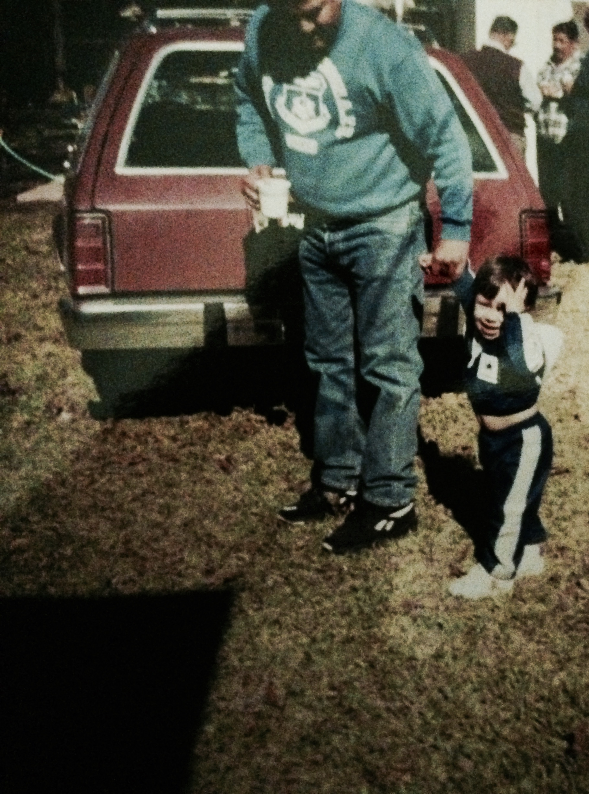
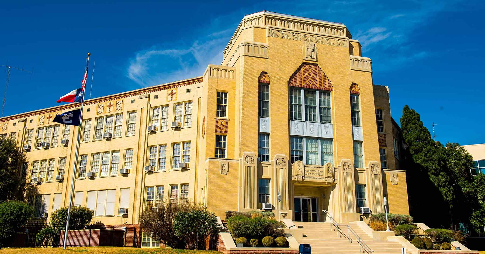

I was born and raised in San Antonio, Texas. I lived there until I moved to Michigan in 2014. I decided to move here to be closer to family that lives here. I also thought this was a great opportunity to experience the world outside of Texas. My dad and sister and her family currently live in Austin, Texas. After graduation I will be moving back and hoping to work in a member of Congress' district office.
Before moving to Ann Arbor, Michigan for school, I was living in Lansing, Michigan. I lived there for a year, but I was in the city often for the past three years since I was attending Lansing Community College.
Attending Lansing Community College was the best decision I ever made. Being in the state capital, I was near the state legsilature and it was there where I would get my first experience of working as an intern in a state senator's office. That was a very beneficial experience and has helped me ever since then.
Prior to living in Lansing, I was living in Lake Odessa, Michigan with my uncle, Bob Warner. I stayed with him when I moved to Michigan, which was great, because I got to know him more. The first year I was living in Michigan I worked in Grand Rapids, Michigan. I worked at an auto dealership, which was actually very fun. I got to drive cars that I never thought I would sit in and made some of my closest friends here in Michigan.
I wanted to share a few images that I am quite fond of and believed offer a lens into my life and who I am as a person. The first being my father and me when I was a child. He and I are very close and he is the reason why I work so hard in life. The second image is of the San Antonio Spurs after their 2014 Championship victory. I love basketball and being a native son of San Antonio I had to share this, so this combines two things I am passionate about.
The next two images are of my alma mater Central Catholic High School, and one of my favorite bands, Daft Punk.
This is just one of my favorite gifs of Coach Howard dancing after they beat Kentucky. I occassionaly dance like this for fun when I am in a good move. Better yet, this is my celebratory dance when I graduate.
 